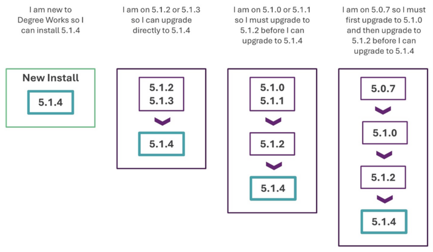

Release 5.1.4
Degree Works 5.1.4 includes new functionality, improves existing functionality, resolves change requests, and more.
For more detailed information about the release, see the Degree Works 5.1.4 and Transfer Equivalency 5.1.4 release records.
General Degree Works Release Information
Overview
The central themes of Release 5.1.4 include expanding the functionality offered in the Responsive Dashboard, Transit, and Transfer Equivalency Self-Service to meet the needs of the client base and enhancements to support Degree Works as a SaaS solution. Release 5.1.4 also meets customer satisfaction goals by delivering over 20 improvements and 60 problem resolutions.
This release is a MINOR release so the version has been assigned as Release 5.1.4 and it will build on the baseline established by the previous MAJOR release, Release 5.1.0, and subsequent releases. This is still a significant release in terms of the product direction, and it continues to build on the infrastructure introduced for Cloud delivery.
Upgrade path
The Degree Works Release 5.1.4 supports a new installation or a direct upgrade path for existing customers currently on Release 5.1.2 or Release 5.1.3.

If you are on any service pack level, the upgrade path you should follow is from your base release as service packs are included in the next release. For example, if you are on 5.1.3.2 you would follow the path of upgrading from Release 5.1.3 to Release 5.1.4.
We encourage customers to stay current with releases so multiple jumps are not required when processing a new release upgrade.
Release support status
With the release of Release 5.1.4, Releases 5.1.2 and 5.1.3 move to Maintenance Support, while Releases 5.0.7 and 5.1.0 move to Sustaining Support. Details about Ellucian Support Assurance can be found in article number 000038478.
Degree Works versions 5.0.0 through 5.0.6 are in End of Support as of June 30, 2024, and all Degree Works versions before 5.0.0 are in End of Support as of January 1, 2021. If you are on one of these versions of Degree Works, you must upgrade to at least Release 5.1.2 to process Release 5.1.4.
For your planning, please note that with the March 2025 release of Degree Works all Degree Works releases will move to a rolling schedule for support. This means that with each new release, all previous releases will transition to the next support status. For example:
- 5.1.5 is released in March 2025 with an Active status
- 5.1.4 released in September 2024 will move to Maintenance status
- 5.1.3 released in March 2024 will move to Sustaining status
- 5.1.2 released in September 2023 will move to End of Support status
Additionally, to get on track with this new support schedule, the following versions will move to End of Support in March 2025:
- Degree Works and Degree Works Transfer Equivalency 5.0.7
- Degree Works and Degree Works Transfer Equivalency 5.1.0
- Degree Works and Degree Works Transfer Equivalency 5.1.1
- Degree Works and Degree Works Transfer Equivalency 5.1.2
Degree Works hardware software requirements
Before beginning a new installation or upgrade, be sure to verify that your Degree Works environments meet the hardware and software requirements.
Supported Hardware Architectures and Associated Operating Systems
Ellucian's support of Linux 7 ended in June 2024. Starting with Release 5.1.4, Red Hat Linux 7 and Oracle Linux 7 are no longer supported operating systems.
For new client installations, only the following hardware architecture and operating system configurations are supported for Degree Works servers:
- Intel-based x86 running Red Hat Enterprise Linux 8.x (64-bit)
- Intel-based x86 running Oracle Linux Server 8.x (64-bit)
For upgrading clients, only the following hardware architecture and operating system configurations are supported for Degree Works servers:
- Intel-based x86 running Red Hat Enterprise Linux 8.x (64-bit)
- Intel-based x86 running Oracle Linux Server 8.x (64-bit)
- IBM running AIX 7.x (64-bit)
- Sun SPARC platform running Solaris 11 (64-bit)
- HP Integrity Platform (IA64) running HP-UX 11.x (64-bit)
Supported RDBMS
Degree Works Release 5.1.4 supports Oracle 19c.
Supported Browsers
Ellucian makes every effort to test and support the current versions of the following browsers at the time of a release:
- Google Chrome
- Mozilla Firefox
- Apple Safari
- Microsoft Edge
For additional information, please review the Ellucian Global Web Browser Support Policy and Matrix.
RabbitMQ
Degree Works Release 5.1.4 has been tested against the following versions:
- RabbitMQ server v3.12
- RabbitMQ client v0.13.0 and v0.11.0
Java
Degree Works Release 5.1.4 requires Oracle Java Development Kit (JDK) or OpenJDK version 11 on both your classic and application servers.
GCC Compiler
Degree Works Release 5.1.4 requires GCC version 8.x.
Apache FOP
Degree Works requires Apache FOP version 2.6 on the classic server.
OpenSSL
Degree Works requires OpenSSL version 1.1.1, including the openssl-devel package.
Degree Works Enhancements
API highlights
Add an option for a JSON response to the Audit Worksheet /api/audit/what-if endpoint
In addition to XML output, API Services can now return an audit in a JSON format from the /api/audit/what-if endpoint.
Audit highlights
Allow CFG073 to be considered in the In-Progress Repeat Checking (IDEA-71630)
A new Shepherd setting has been added to determine if cross-listings in CFG073 should be considered in the in-progress repeat checks during the Banner student extract.
When integration.banner.extract.student.checkCrosslistedRepeats is true, the extract uses the cross-listings in CFG073 to see if in-progress classes are repeats of historic and transfer classes.
When the CFG020 DAP14 school filter is disabled, we sometimes need to hide all or some classes from the other school that are showing in over-the-limit
You can now hide classes from a different school (level) in the over-the-limit (OTL) section of an audit.
When CFG020 DAP14 Filter Classes by School is No, classes from a different school can be applied to the audit. CFG020 DAP14 Hide different school OTL classes has been added to allow institutions to choose whether to hide the classes that belong to a different school that have been moved to the Over the Limit section due to a header qualifier. In this way, an institution can allow a limited number of classes from a different school to be applied to the audit while still hiding a majority of classes with a different school from the Over the Limit section.
Total credits in all blocks except the starting block not calculating correctly due to split course
When a class's credits are split among multiple blocks, the sum of the credits are now correctly included in the calling block's total credits.
StandAloneBlock does not work when used as part of an if-statement
When used as part of an if-statement in the header of a block, StandAloneBlock will now work and classes will now be shared across blocks and no longer be removed with reason code Too many fits across blocks.
Degree Works credits calculations are sometimes inexact when performing arithmetic on numbers with decimals
Audits now properly handle floating point numbers caused by fractional credits that result in unexpectedly long numbers.
Banner highlights
Bridge highlights
Bridge new students into Degree Works through Responsive Dashboard
For Banner schools, users can now bridge individual students into Degree Works through the Responsive Dashboard. When the ID for a student that is not currently in Degree Works but is in Banner is entered into the search field, the authorized user will be prompted to add them. If the user chooses to load the student, the student's data will be bridged from Banner into Degree Works and a degree audit will be generated.
Scripts highlights
rmoldfiles needs to be able to delete a large number of files from directories
The rmoldfiles script has been updated to successfully handle deleting a large number of files from a directory. Previously, a sh: /usr/bin/ls: arg list too long error might have been encountered because of a kernal parameter limitation in rm command.
System highlights
Obsolete Shepherd scripts
Shepherd (SHP) scripts are no longer used to manage actions within Degree Works applications. This functionality has been moved to the classic code.
As part of the update, all database records in SHP_COMPOSER_MST and the app/baseline/shpscripts directory will be deleted.
Remove the unused Status, Custom, and Revision fields from all UCX tables
The UCX_STATUS, UCX_CUSTOM, and UCX_REVISION columns have been removed from all UCX tables. These fields were not used for any baseline functionality and often created confusion for users.
Convert dap08 to use RabbitMQ instead of TCP/IP
Scribe now sends parse requests through RabbitMQ rather than a TCP/IP socket and as a result, the dap08 daemon has obsoleted. There is no longer a need to execute dapstart/daprestart/dapstop.
Transfer Equivalency Self-Service highlights
Convert Transfer Equivalency Self-Service from AngularJS to ReactJS
The Transfer Equivalency Self-Service application has been converted from AngularJS to React JS and adopted the Ellucian Path Design System to eliminate technical debt and provide a consistent user experience between all Degree Works applications. Additionally, Transfer Equivalency Self-Service is fully responsive for mobile viewports and meets WCAG 2.0 AA requirements for accessibility. With this change, localizations to Transfer Equivalency Self-Service can now be managed completely with UCX table configurations and language properties through Controller, eliminating the CSS, XSL, and Shepherd scripts previous versions of the application used. As a result, the Composer application has been obsoleted.
As part of the upgrade process, be sure to plan for enough time to configure, test and review the new Transfer Equivalency Self-Service application.
Transfer Equivalency Cannot Be Used Correctly with Curriculum Rules
Curriculum rule filtering in Transfer Equivalency Self-Service now follows the Show in Transfer Equivalency flags for goal items rather than the Show in What-If flags, allowing schools to configure different behavior for Transfer Equivalency Self-Service goal filtering than the Responsive Dashboard What-If audit.
DWTESS: Add localizable text to screens so instructions can be added for prospective students
Similar to the feature added in Release 5.1.3 for Responsive Dashboard, you can now add instructional header text to each page of Transfer Equivalency Self-Service using the headerText properties in TransferMessages.properties in Controller. You can also localize the font color and weight of this text.
DWTESS: Add option to not display type of credits drop-down
A new Shepherd setting has been added to configure whether the credits type drop-down should display on the transfer classes page of Transfer Equivalency Self-Service. When treq.selfService.showCalendarType is false, the user will not have to select the credit type when adding a transfer class, and the articulation engine will use either the RAD_CALENDAR field on the selected school's RAD_ETS_MST if it is a valid value in STU346 or the core.institution.calendarType Shepherd setting if it is not.
Sort transfer grade drop-down by STU398 Numeric Grade
The sort on the grade drop-down for transfer classes in Transfer Equivalency Self-Service is now sorted by the STU398 Numeric grade value table and then by Key, if the Numeric grade value is blank.
DWTE Self Service: Enable Course Link
Course Link functionality can now be enabled in the Transfer Equivalency Self-Service transfer audit for Banner sites.
Add confirmation when Transfer Equivalency Self-Service user saves data
A confirmation message is now displayed in Transfer Equivalency Self-Service after a user saves entered data.
Transit highlights
Transit: Grant access to individual scripts in ADMIN
In Transit, the jobs and processes that were collected under ADMIN have been separated into individual jobs. These new jobs have a SYS prefix and can be assigned individually to users based on their role. In addition, a new TRANSYS Shepherd group containing all of these new SYS jobs has been created. This can be assigned to users authorized to access all of the jobs that were under ADMIN.
Move the functionality of the dapauditstopdffiles script into a Transit job
A new Transit job, DAP24 - Generate Audit PDFs, has been created to replace the obsolete dapauditstopdffiles script. You can now use Transit to generate PDFs for a specified set of audit-IDs.
Allow DAP22/27/28 PDF output file name to be configurable
The name format of the PDF output files for DAP22, DAP24, DAP27, and DAP28 can be configured in the new transit.dap*.fileFormat Shepherd settings.
Degree Works updates
Database Changes
There are several database changes in Release 5.1.4.
The following fields were removed from DAP_EXCEPT_DTL:
- DAP_EXC_STATUS
- DAP_EXC_REQ_OLD
- DAP_EXC_CLUSTER
- DAP_NOTE_NUM
- DAP_CREATE_ID
- DAP_USER_LAST
- DAP_MOD_DATE
- DAP_MOD_ID
The RAD_SIS_ID field was added to RAD_PRIMARY_MST.
The RAD_STUDYPATHID was added to the following tables:
- RAD_GOAL_DTL
- RAD_CLASS_DTL
- RAD_TRANSFER_DTL
The following fields were removed from all UCX* tables:
- UCX_STATUS
- UCX_CUSTOM
- UCX_REVISION
Subtractions
With Release 5.1.4 the Composer application has been obsoleted. To accomplish this, the actions that were managed by Shepherd scripts were moved into the classic server software, and the Transfer Equivalency Self-Service application was rewritten in ReactJS, providing a user experience similar to Responsive Dashboard and no longer utilizing CSS and XSL. All Degree Works application configuration and localization can now be done solely in Controller.
Scribe now sends parse requests through RabbitMQ rather than a TCP/IP socket and as a result, the dap08 daemon has been obsoleted. There is no longer a need to execute dapstart/daprestart/dapstop.
The option to log in to Transfer Equivalency Self-Service with a Facebook account has been obsoleted.
Documentation
The documentation for this release is available on the Ellucian Documentation site. It can be viewed interactively and, if desired, can be exported in total or by topic. A login for the Customer Center will be required to access the entire suite of documentation.
A small subset of user documentation can be found on the Ellucian Documentation site under the Use category. The Use category is available to all users, including those without a Customer Center login.
Transfer Equivalency Self-Service will continue to have online help built-in, because the target audience for this application is a prospective student.
You can find Degree Works product documentation in the Customer Center by following Resources > Documentation > All Documentation and selecting Degree Works.
Degree Works API documentation is also available in the Customer Center by following Resources > Documentation > All Documentation > API Catalog.
Degree Works 5.1.4 Service Pack 1
This patch corrects defects reported with Degree Works Release 5.1.4.
Click Attachments  on the side panel to download the service pack general information and instructions.
on the side panel to download the service pack general information and instructions.
Degree Works 5.1.4 Service Pack 2
This patch corrects defects reported with Degree Works Release 5.1.4.
Click Attachments on the side panel to download the service pack general information and instructions.